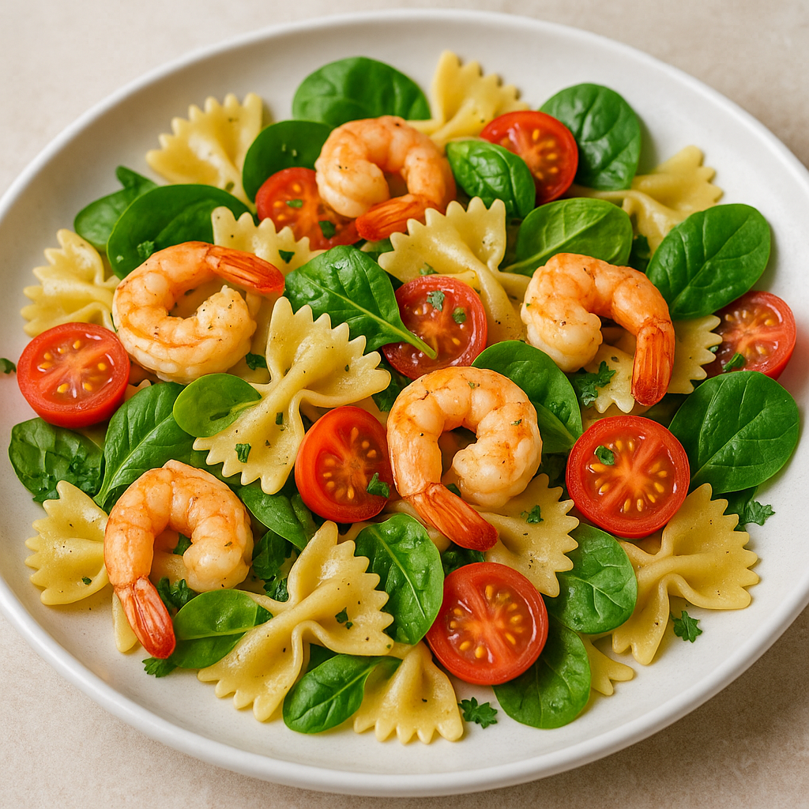

Shrimp Pasta Salad Recipe

A fresh shrimp pasta salad with bow-tie pasta, tomatoes, spinach, and olive oil
This shrimp pasta salad combines the tender bite of farfalle pasta with succulent shrimp, juicy cherry tomatoes,
and crisp spinach leaves, all tossed in a simple yet flavorful olive oil and herb dressing.
The shrimp are lightly seasoned and perfectly cooked, adding a savory seafood touch to the dish. The bright colors
and balanced textures make it a refreshing and satisfying option, perfect for a summer lunch or light dinner.
Ingredients
- 200g bow-tie (farfalle) pasta
- 250g cooked shrimp (peeled and deveined)
- 1 cup cherry tomatoes (halved)
- 1 cup fresh spinach (roughly chopped)
- 2 tablespoons olive oil
- 1 tablespoon lemon juice (optional)
- 1 garlic clove (minced)
- Salt and black pepper to taste
- Fresh parsley (chopped, for garnish)
- Optional: grated parmesan or red pepper flakes for extra flavor
Steps
- Make the pasta -> Boil bow-tie pasta in salted water until al dente. Drain and rinse under cold water to cool.
- Prepare the dressing -> In a small bowl, mix olive oil, lemon juice (optional), minced garlic, salt, and pepper.
- Combine ingredients -> In a large bowl, toss the cooked pasta with shrimp, cherry tomatoes, and spinach.
- Add dressing -> Pour the dressing over the salad and mix gently until everything is well coated.
- Garnish and serve -> Top with chopped parsley (and optional parmesan or red pepper flakes), then serve chilled or at room temperature.
Back to Recipes